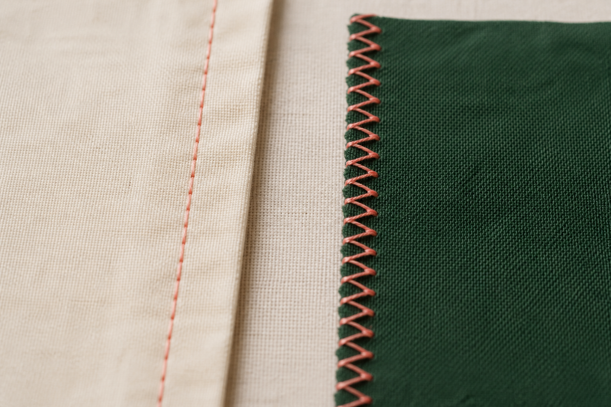
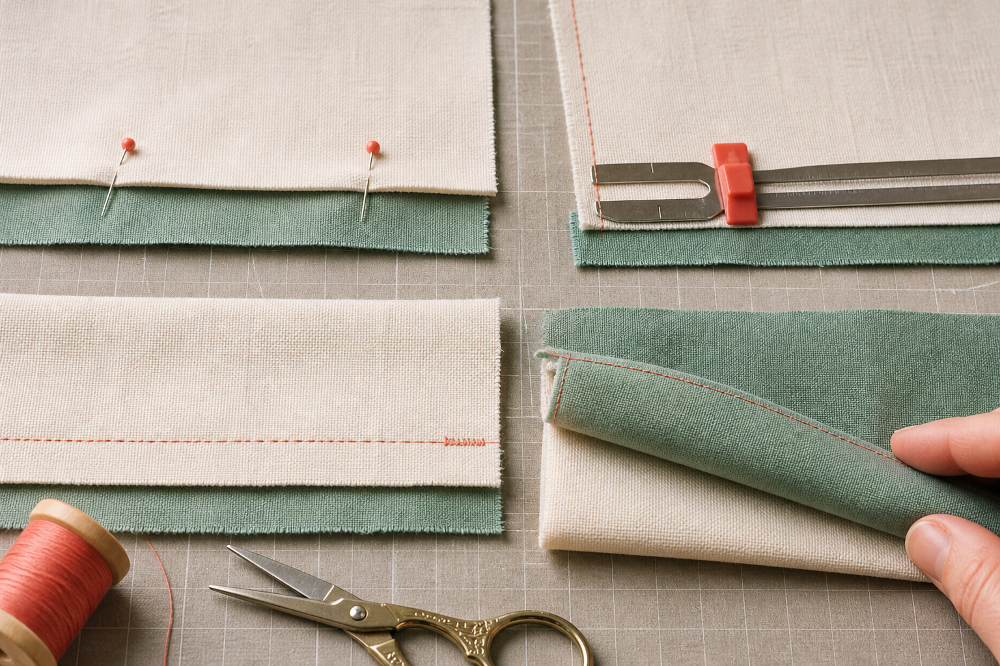
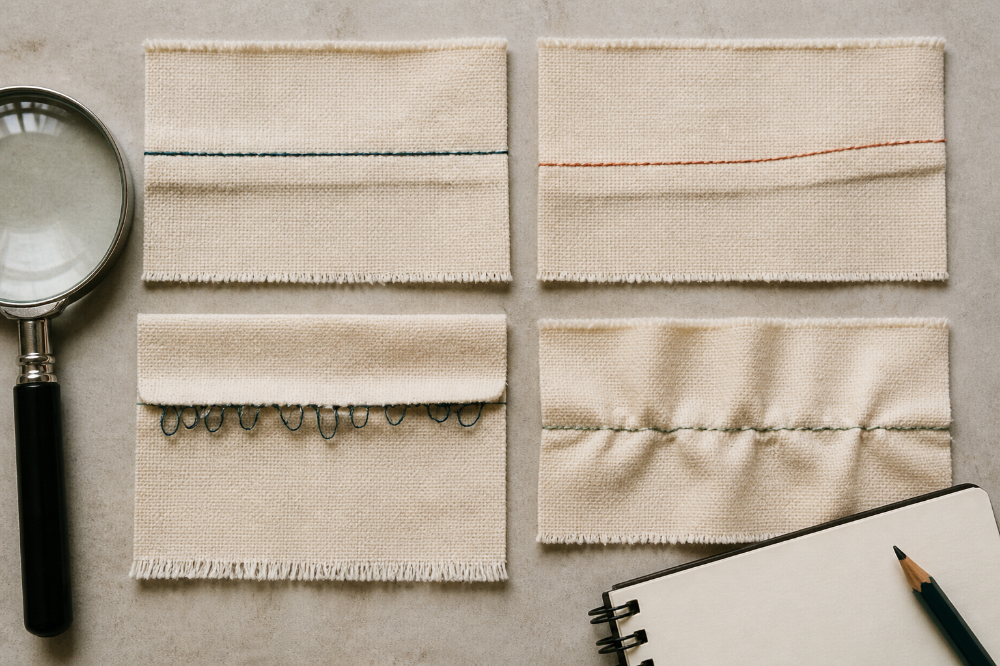

Section 1
Choosing Straight and Zigzag Settings
Learning purpose: Teach functional selection of straight and zigzag stitches through intended job, material response and test evidence without prescribing unsupported machine settings.
A stitch is chosen for a job. Straight stitch and zigzag stitch create different thread paths, so the useful choice depends on whether the task is joining, reinforcing, edge finishing, decoration or a controlled sample test.
A straight stitch forms a single line and is commonly used for joining stable fabric layers in a seam. Its accuracy depends on guiding the fabric along a consistent reference and using the machine settings demonstrated for the actual fabric and task.
A zigzag stitch moves from side to side. It can be used on suitable fabrics to help contain some raw edges, add reinforcement in a planned area or create decorative effects. Zigzag is not automatically a replacement for every straight seam, and its width and density must suit the task.
Stitch settings may include type, length, width and tension, but controls and suitable values vary by machine, thread, fabric and number of layers. Students use the approved starting setup, make a sample on matching offcuts and ask before changing unfamiliar settings.
Evaluate both sides of the sample. Look for an even path, balanced thread appearance, fabric lying reasonably flat and no skipped stitches, large loops or repeated thread breaks. A test result supports selection only when the sample resembles the final materials and construction.
Key vocabulary
- straight stitch
- A stitch that forms a single line and is commonly used to join stable fabric layers.
- zigzag stitch
- A stitch that moves side to side and can support suitable edge, reinforcement or decorative tasks.
- stitch length
- The distance the fabric advances between successive needle entries.
- stitch width
- The side-to-side span of a stitch such as zigzag.
- stitch balance
- The way upper and lower threads meet so neither side shows large unwanted loops.
Selecting stitches for a bag-body sample
- Name the first job: join two stable layers along a planned seam line.
- Use the teacher-approved straight-stitch setup on matching offcuts and inspect both sides.
- Name the second job: manage a suitable exposed raw edge within the project method.
- Test the approved zigzag setup near a matching edge and compare containment, flatness and thread formation.
Conclusion: Each stitch earns its place by completing a defined job and producing acceptable evidence on the actual material.
Ideas to challenge
- Zigzag is a stronger replacement for every straight seam.
- One remembered numeric setting will suit every machine, thread and fabric.
Straight stitch joins
A straight line is commonly used to join stable layers when guided along the required seam reference.
Zigzag moves side to side
A zigzag can support suitable raw-edge, reinforcement or decorative jobs, but it does not automatically replace every seam.
Settings need sample evidence
Machine, thread, fabric and layers affect the result; use approved starting settings and inspect both sides of a matching offcut.

Complete non-video pathway
Stitch-function sort
Close-up stitch samples plus a task sort make the two thread paths and their appropriate jobs directly comparable.
Before
- Read the adjacent stitch-function explanation and inspect both sides of the sample visual.
- Do not choose numeric settings; prepare only the current class task cards.
During
- Underline the job in each task card.
- Choose the stitch path that could perform that job.
- Identify the matching material evidence needed.
- Mark any uncertain or model-specific choice for teacher confirmation before testing.
After
- Justify one straight-stitch and one zigzag-stitch choice.
- Record the actual teacher-approved setting only after a supervised offcut test.
Evidence to keep: Two task-to-stitch justifications and one clearly marked teacher-check item.
Check, apply and save evidence0/10 + response
Answer all ten checks. Feedback appears after each choice, so use it to revisit the linked theory before continuing.
Higher-order response
Explain your thinking
Compare straight and zigzag stitch functions for joining, raw-edge management and decoration. Recommend a test plan for selecting suitable stitches for the Awesome Bag materials.
Build your response
- Describe each stitch path and the jobs it can reasonably perform.
- Identify where one stitch should not automatically replace the other.
- Plan comparable offcut samples using the intended materials and layers.
- Define the front-and-back evidence that would support each choice.
Success looks like
- Matches stitch functions to specific construction jobs.
- Uses approved, comparable sample evidence without inventing machine settings.
Nothing saved yet.
Resume this packageSection 2
Sewing and Reinforcing a 1.5 cm Seam
Learning purpose: Explain the authorised seam allowance, consistent guidance, backstitch reinforcement and suitable raw-edge finishing as an integrated construction sequence.
The authorised Awesome Bag procedures use a 1.5 cm seam allowance for key construction seams. Accuracy matters because the distance between the raw edge and stitch line affects component size, alignment and durability.
A seam joins two or more fabric layers. Seam allowance is the material between the raw edge and the stitch line. For this project, align the layers in the arrangement shown by the teacher and guide the agreed raw edge at the 1.5 cm reference rather than measuring from the needle by eye while sewing.
Begin and finish the seam using the demonstrated backstitch method. Short reverse stitches overlap the straight seam near its ends and help resist unravelling where the seam starts or stops. Reinforcement should be controlled; a large tangle of repeated stitching can add bulk and weaken the appearance.
Keep the fabric flat and let the feed system advance it. Watch the seam guide ahead, maintain the 1.5 cm distance and stop if layers shift, a pin approaches the stitch zone or the stitch changes unexpectedly. Repositioning follows the demonstrated safe method with machine movement stopped.
After joining, suitable raw edges may be finished with the approved zigzag process, then checked and pressed at the directed stage. Inspect the seam from both sides for consistent allowance, secure ends, even stitches, caught layers and unwanted puckering before moving to the next component.
Key vocabulary
- seam
- A line of stitching that joins two or more fabric layers.
- seam allowance
- The fabric between the raw edge and the seam stitch line.
- backstitch
- Short reverse stitching that overlaps the seam near an end to resist unravelling.
- raw edge
- A cut fabric edge that may fray or require finishing.
- puckering
- Unwanted gathering or rippling of fabric along a stitched line.
Constructing one controlled side-seam sample
- Arrange and align matching layers as demonstrated, then identify the raw edge and 1.5 cm machine reference.
- Use the approved straight-stitch setup and a short demonstrated backstitch at the beginning.
- Guide the edge consistently without pulling, slowing before the end.
- Backstitch at the finish, stop safely, inspect both sides and apply the approved raw-edge finish if required.
Conclusion: The seam is successful when dimension, reinforcement, layer capture and stitch quality work together.
Ideas to challenge
- A 1.5 cm seam allowance means the stitch line itself is 1.5 cm wide.
- More and more reverse stitching always makes a seam stronger and neater.
What 1.5 cm measures
The 1.5 cm seam allowance is the distance from the agreed raw edge to the stitch line.
Reinforce seam ends
A short, controlled backstitch overlaps the straight seam at each end to resist unravelling.
Inspect the whole seam
Check allowance, captured layers, secure ends, even stitches, raw-edge finish and puckering before continuing.

Complete non-video pathway
Paper seam-control rehearsal
The measured overlay and layered-paper rehearsal make allowance, sight line and reinforcement positions explicit before fabric or power is used.
Before
- Read the authorised 1.5 cm seam, backstitch and raw-edge explanation.
- Study the measured seam visual and prepare layered paper only.
During
- Mark a raw edge and a parallel 1.5 cm stitch line.
- Trace the path from a short starting overlap through the main seam to a short finishing overlap.
- Identify where eyes and guiding hands should be positioned.
- Use the inspection checklist to predict errors from a drifting line or missed layer.
After
- Annotate where reinforcement and raw-edge finishing occur.
- Carry the paper result to the teacher-approved offcut test before project fabric.
Evidence to keep: A correctly measured paper seam path with reinforcement and inspection notes.
Check, apply and save evidence0/10 + response
Answer all ten checks. Feedback appears after each choice, so use it to revisit the linked theory before continuing.
Higher-order response
Explain your thinking
Explain and justify a method for producing a reinforced 1.5 cm seam sample that is ready for quality checking before bag construction.
Build your response
- Define seam allowance and show what the 1.5 cm measures.
- Explain layer preparation, edge guidance and speed decisions.
- Describe controlled backstitching at both ends.
- Create a post-sewing inspection covering both sides, raw edge, layer capture and fabric flatness.
Success looks like
- Sequences the authorised seam facts accurately and safely.
- Explains how each action contributes to dimension, durability or finish quality.
Nothing saved yet.
Resume this packageSection 3
Testing and Evaluating Stitch Samples
Learning purpose: Use planned comparable tests and precise records to evaluate stitch and seam quality before students commit to production materials.
A stitch sample is a small experiment. Its purpose is to reveal how the actual machine, thread, fabric, layers and handling work together before the final product is at risk.
A useful sample matches the planned construction as closely as practical: same fabric type, number of layers, thread and approved starting setup. Label the sample so the conditions and result can be compared later. An unlabelled scrap may show a stitch, but it cannot explain which choices produced it.
Inspect appearance and structure. Check the upper and lower sides for even stitch formation, the path for accuracy, the fabric for puckering, the seam allowance for consistency, the ends for reinforcement and the raw edge for suitable containment. Gently test the seam in the direction of likely use without turning a learning sample into an uncontrolled destruction test.
When a fault appears, describe it precisely before proposing a cause. 'Large loops on the lower side' is more useful than 'bad stitching'. Check known setup factors first and change only one teacher-approved variable at a time so the next sample can show whether that change helped.
Evaluation ends with a decision: accept the method, refine and retest, or reject it for this use. Record evidence and reasoning, including unsuccessful samples, because they show how the production method became safer and more reliable.
Key vocabulary
- sample
- A small trial made to test a material, setting, technique or construction method.
- variable
- One factor that can be changed and compared during a test.
- fair comparison
- A comparison that keeps relevant conditions the same while investigating a chosen difference.
- fault description
- A precise observation of what and where the result differs from the intended quality.
- retest
- Repeat a controlled test after a justified change to gather new evidence.
Improving a seam that puckers
- Label the sample and describe the evidence: ripples appear along the stitched line on both sides.
- Confirm the correct thread path, layer arrangement and handling method before assuming a setting fault.
- With teacher guidance, choose one approved variable to adjust and keep material, thread, layers and test length constant.
- Sew and label a second sample, then compare flatness, stitch formation and seam strength with the first.
Conclusion: A one-variable retest produces clearer evidence than changing thread, settings, handling and fabric simultaneously.
Ideas to challenge
- An unlabelled sample is enough to reproduce a successful method later.
- Changing several variables at once is the fastest way to discover which change fixed a fault.
Make samples comparable
Match planned fabric, layers, thread and approved setup; label conditions so evidence remains traceable.
Inspect specific qualities
Check both sides, path, allowance, reinforcement, puckering, layer capture, edge containment and use-direction strength.
Change one approved variable
Describe the fault, check known setup factors, adjust one teacher-approved factor and retest before deciding.

Complete non-video pathway
Blind sample audit
A photographic contact sheet and concealed test records let students diagnose faults and propose a controlled next trial.
Before
- Read the adjacent fair-test explanation and open the four labelled seam-sample stills.
- Hide the setting records until observations have been made.
During
- Inspect both sides and describe observations without using good or bad.
- Measure or compare seam allowance and reinforcement.
- Rank which evidence matters most for the intended use.
- Reveal the test record and propose one controlled next action for each rejected sample.
After
- Write one accept-or-retest decision with evidence.
- Name the single variable that should change in the next approved trial.
Evidence to keep: One evidence-based sample judgement and a one-variable retest plan.
Check, apply and save evidence0/10 + response
Answer all ten checks. Feedback appears after each choice, so use it to revisit the linked theory before continuing.
Higher-order response
Explain your thinking
Evaluate three seam samples: one with a drifting allowance, one with lower-side loops and one that is even and secure. Develop a controlled improvement plan and justify which evidence would permit production to begin.
Build your response
- Describe each sample precisely on both sides.
- Relate each observation to allowance, thread formation, reinforcement, layer capture or fabric flatness.
- Propose one teacher-approved variable or setup check at a time for rejected samples.
- Define the acceptance evidence and explain how records would be preserved.
Success looks like
- Uses specific observations and fair-comparison reasoning.
- Makes an evidence-based accept, refine or reject decision for each sample.
Nothing saved yet.
Resume this packageModule review
Three sections, one connected idea
Use these direct links to reopen any incomplete package. A section counts when all ten checks and a substantive long response are saved.